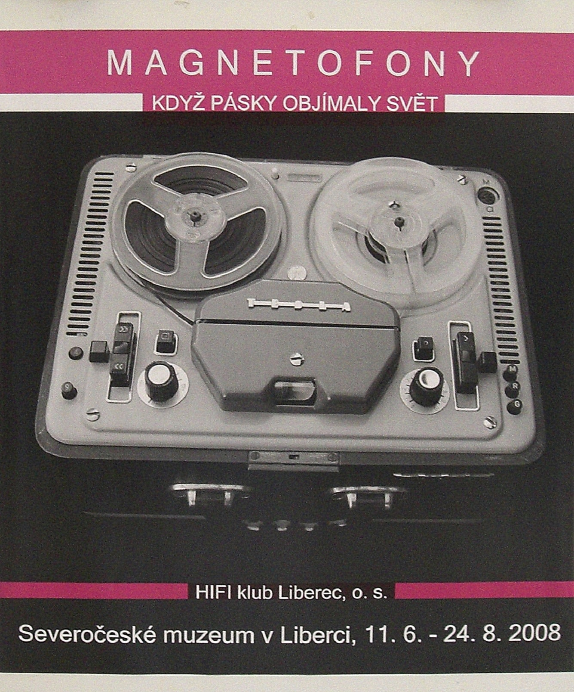

-
MAGNETOFONY
V roce 2008 oslavil klub 40 let své činnosti a to byl jeden z důvodů uspořádat výstavu MAGNETOFONY, na které jsou představeny jak tuzemské, tak i celá řada zahraničních cívkových a kazetových magnetofonů od komerčních až po špičkové výrobky. Vedle prezentace výrobců z celého světa je zde připomenuta historie největších tuzemských výrobců magnetofonů Tesly Liberec, Tesly Přelouč a Tesly Pardubice. Prostřednictvím tohoto CD dostává návštěvník mnoho informací nejen o magnetofonech ale i mikrofonech, magnetofonových páscích a jejich historii. Najde zde kolem sta fotografií magnetofonů, celou řadu mikrofonů, magnetofonových pásků a dalších fotografií souvisejících s historii těchto přístrojů a pásků. V neposlední řadě jsou zde informace o činnosti HIFI klubu Liberec.
-
MAGNETOFONY & RÁDIA
dnech 20. 6. - 30. 7. 2015 uspořádal HIFI klub Liberec ve spolupráci s Nákupní galerií PLAZA v Liberci výstavu, která již svým názvem měla připomenout dobu, kdy magnetofony a rádia byly hlavními domácími zdroji zábavy a poučení. Výstavu doplnil svými objekty výtvarník Petr Heber. Hlavním cílem výstavy bylo seznámit širokou veřejnost s historií výroby magnetofonů a radiopřijímačů TESLA v období let 1945 - 1990. Zvláštní místo pak bylo věnováno magnetofonům vyráběným v TESLE Liberec, včetně historie tohoto podniku. Na výstavě byla prezentována řada přístrojů značky TESLA, dobová i současná odborná literatura a vše bylo doplněno panely, na kterých byly informace z oblasti záznamové techniky a výroby radiopřijímačů. HIFI klub Liberec zde také představil svoji činnost, která zasahuje do oblastí video a audio techniky. Oblast audio techniky klub prezentoval na zpracovaných materiálech, které přibližují historii, použitou techniku, výrobky a jejich příslušenství jak magnetofonů, tak rozhlasových přijímačů vyráběných v podnicích a závodech TESLA v Československu.
-
RÁDIOPŘIJÍMAČE, MAGNETOFONY A GRAMOFONY TESLA
Radiopřijímače, magnetofony a gramofony zaplnily výstavní prostor ve vestibulu Krajského úřadu Libereckého kraje. Po celý srpen zde uvidí návštěvníci sběratelské kousky HIFI klubu Liberec. Výstava se koná pod záštitou člena rady kraje RNDr. Víta Příkaského. Návštěvníci na výstavě uvidí průřez historií výroby společnosti TESLA za období 1945 až 1990 s důrazem na TESLU Liberec, která byla nositelem výroby přenosných, tranzistorových magnetofonů v Československu. HIFI klub Liberec se od začátku své činnosti zaměřuje na propagování zvukové a obrazové techniky na nejvyšší úrovni. Klubem prošly stovky členů, kteří pak v praxi mohli použít získané informace. Klub je nejen zdrojem poznání (klubové večery) ale i praktických činností. Vyrábí zvukařské aparatury, které pak slouží pro ozvučování, především sportovních akcí (byly to světové poháry v lyžování, Jizerská padesátka, Sokolské slety a další). Dnes je garantem ozvučování všech utkání fotbalistů Slovanu Liberec, včetně pořizování video záznamů. Vedle toho klub každoročně ozvučuje velký dětský házenkářský turnaj v Liberci, plochodrážní závody a další akce. HIFI klub Liberec je jedním z posledních svého druhu v České republice. Tisková zpráva Krajského úřadu Liberec